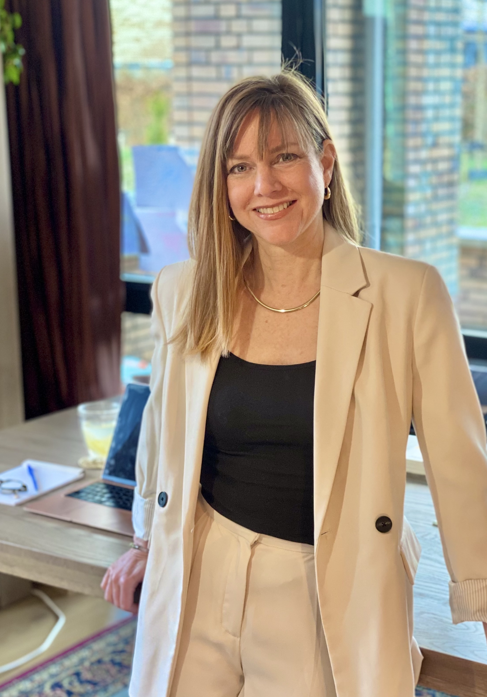

If you're here, you're probably looking for real answers to an ongoing health issue you just can't seem to get a handle on. That's often where I come in.

Ancient wisdom applied to modern hormonal and reproductive health challenges.
Root-cause investigation into hormonal imbalances, nutritional deficiencies, and gut health.
Shifting the body's energy to support healing and restore vitality from the inside out.
A unique approach that hones in on what your body specifically needs — and shifts things quickly.
"Your body is not broken. It's asking to be heard — and I'm here to help you listen to it."— Anne Lane, Naturopath
"Anne completely transformed how I understand my body. After years of feeling dismissed by conventional medicine, she helped me find real answers for my perimenopause symptoms."
"I had been struggling with unexplained infertility for two years. Anne's approach was holistic, compassionate, and thorough. Six months later, I'm expecting my first child."
"The nutrition guidance Anne provided changed everything. My energy levels are higher than they've been in a decade. She truly listens and crafts a plan that fits your life."